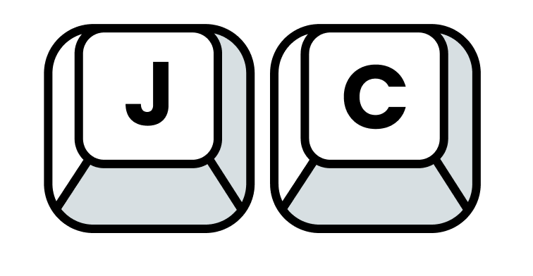

Jonathan
Chiang
Product Designer & Design Engineer
Enter the portfolio.
Jonathan Chiang
- Role
- Product Designer & Design Engineer
- Based in
- New York City
- Status
- Open to full-time roles
- Previously
- SkillCat

Product Designer & Design Engineer
Enter the portfolio.